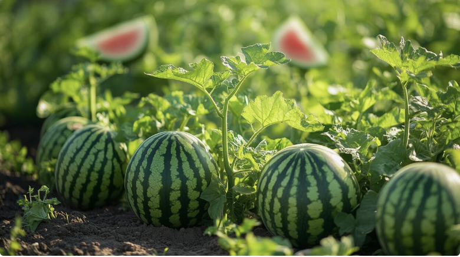

| Watermelon type | Price | Origin |
|---|---|---|
| Black Diamond | $4 | United States |
| Densuke Watermelon | $250-6,000 | Japan |
| Crimson Sweet | $2-3.99 | Kansas State University |
Growing watermelons can be a complicated process, escpecially because one must factor in the weather in order to succesfully grow watermelons.
Watermelons typically take around 70-100 days to grow. Some smaller varieties of watermelon will grow faster, while larger varieties can take much longer
Growing a watermelons is a long process that has several steps.These are three main steps to growing a watermelon.
